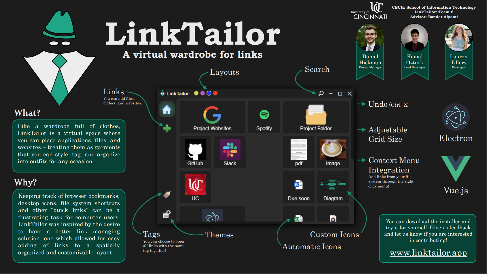

LinkTailor
A virtual wardrobe for your links...
Like a wardrobe full of clothes, LinkTailor is a virtual space where you can place applications, files, and websites – treating them as garments that you can style, tag, and organize into outfits for any occasion. By saving layouts of links within LinkTailor, you can easily access them all in one place or even open them all with a single click.

You might make a layout for...
Communications:
Gmail, Facebook, GroupMe, Instagram, Discord, Slack, etc.
Project:
Word docs, diagrams, your project portal, websites for research, a dropbox folder, a OneNote page, etc.
Gaming:
A spatially organized display of game exes, Discord, Twitch, strategy websites, SoundCloud music, folders with game saves, etc.
File System:
Folders of pictures, screenshots, and artwork, folders of project work, resumes and cover letters, essays, records, etc.
Other ideas for layouts may include:
podcasts, “when I’m bored”, self-improvement, cooking/recipes, Psychology 101, articles to read, job search, community resources, morning workout, music production
Features
- Layouts: Arrange links spatially within a drag-and-drop grid system.
- Grid size is adjustable
- All links in a layout can be opened together.
- Tags: Links can be given custom tags.
- Styles: Links can be custom styled and given custom icons.
- Icons are automatically fetched from the file system and websites.
- Windows Context Menu Integration: In Windows, files can be added to LinkTailor through the right-click menu (if the option is not deselected during install).
- Undo: Use Ctrl+Z to undo your last action.
Download